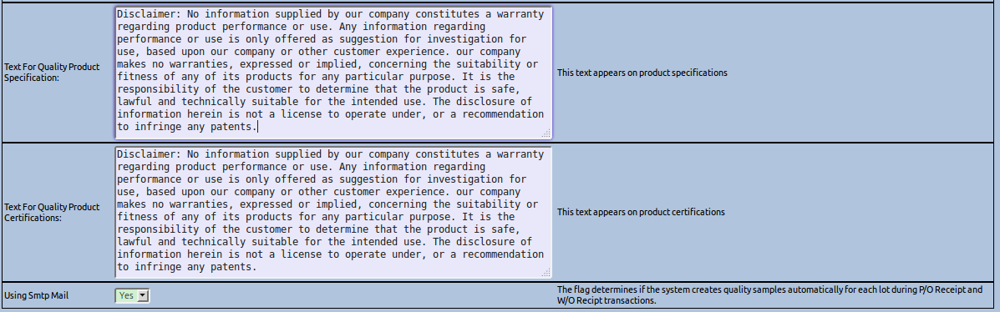
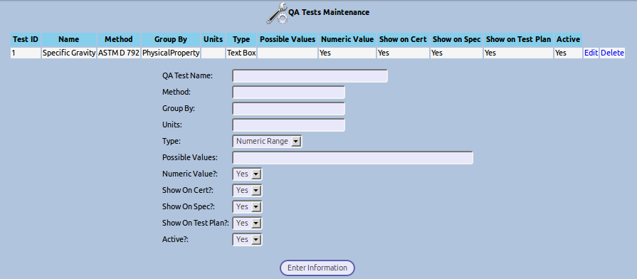
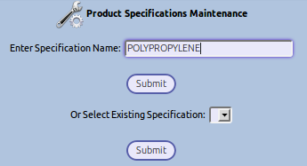

The Quality module allows the users of WebERP to define what they would like to test, apply those tests to certain templates or specific products (Items, Stocks) and then to capture actual test results on a Lot to Lot or Serial number basis. Outputs from the module include a Product Specification or Data Sheet and a Certificate of Analysis. Historical Results are kept and can be compared side by side for any particular Item. There is an option in the configuration that allows QA Samples to be automatically logged for Purchase Order and Work Order receipts if the product specification exists and the item is Lot or Serial Controlled. Also in the configuration are some disclaimers for specifcations and certifications.

This is where all tests that will be performed are defined. Other specification related information can be captured here that isn’t tested but describes in more detail the product specification. An example of this would be Processing Conditions for your product that you wish for your customers to understand.

Product Specifications are a collection of QA Tests that come together to define how a Product Data Sheet is built, what we test for and what we certify our results to. These are loosely tied to Items (Stocks). If a Product Specification is named the same as a stock ID then the Product Description will be used in printed paperwork and screens. If it is not a stock id then it is considered a generic product specification that can be used to hold any type of test results in your system. This also allows cascading templates to be created for faster product specification definition. In the future I foresee there may also be a loose connection to Fixed Assets. A Product Specification is added as soon as a test is added to it. To start a new specification, go to the Product Specification Screen, Type in a specification Name or stock id and click Submit.

Then click “Add more Tests